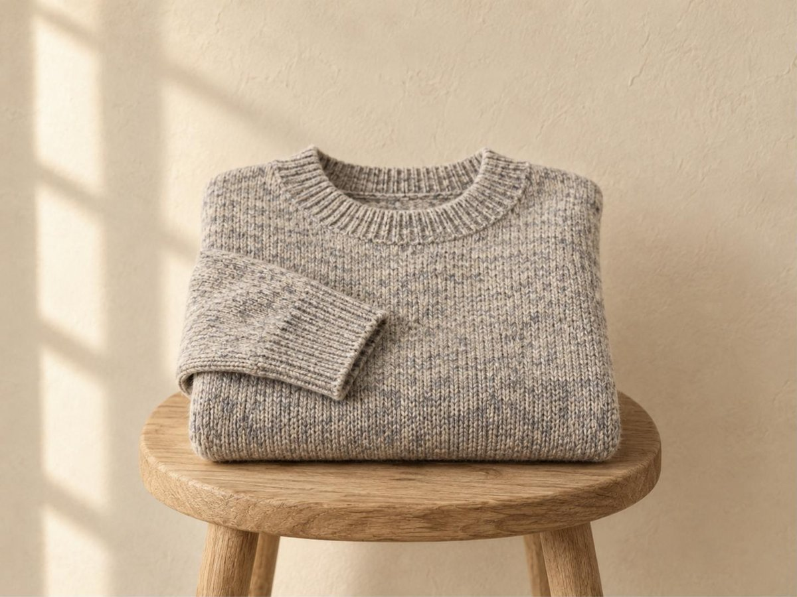
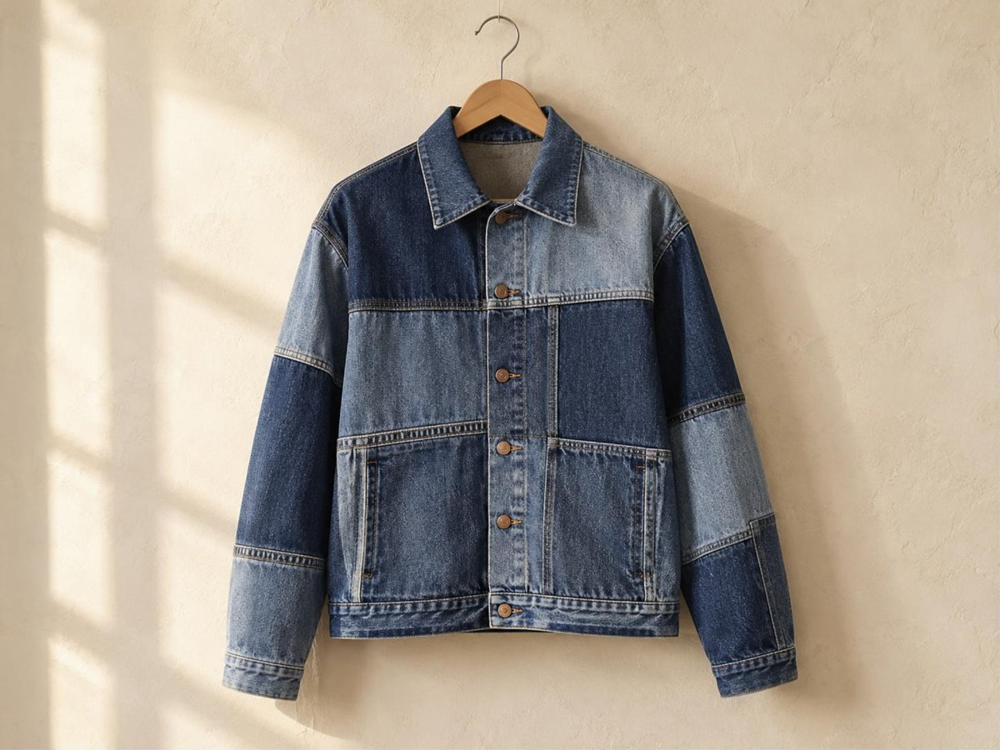
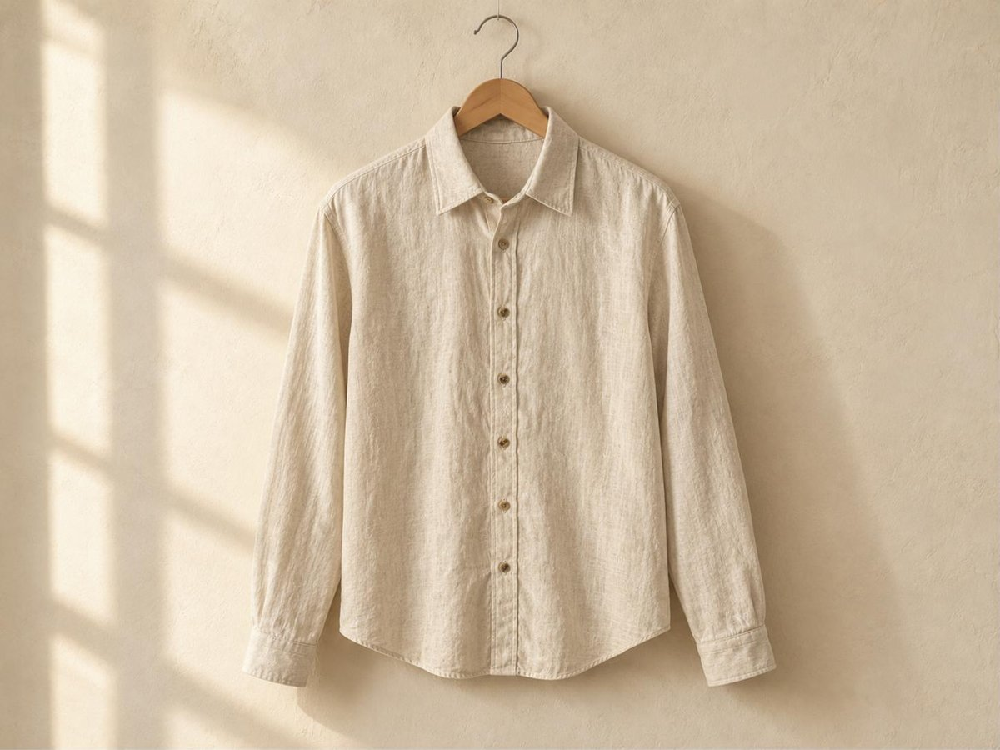
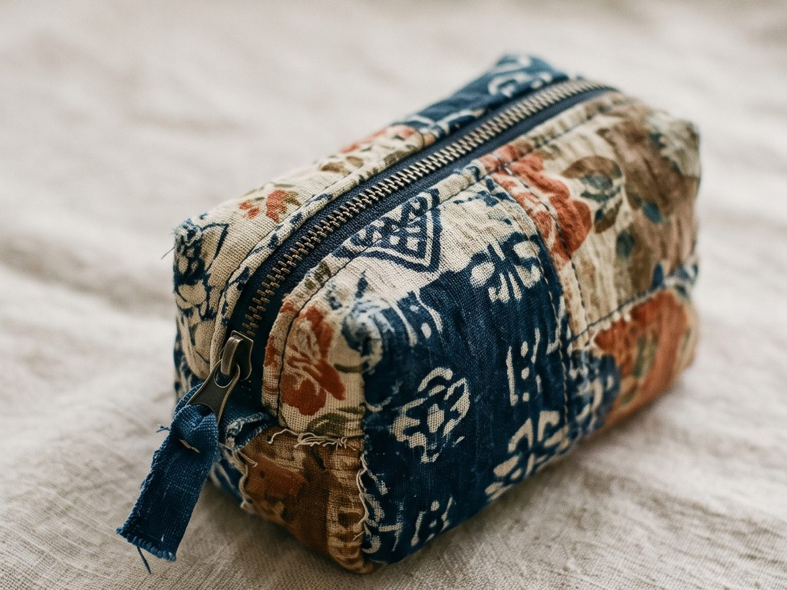

Products
Ecowear does not make clothes: we certify them. Every garment below is made by an independent brand that passed our three audits, and you can buy it directly through Ecowear. Each card tells you what the garment is made of, where it was made and which certificate it carries.
Certified Garments

Organic Cotton Sweater
Maison Verte · Lyon
€89
- 100% organic cotton, grown without synthetic pesticides
- Knitted in Lyon, 0 km of air freight
- Certificate EW-24-002

Patchwork Denim Jacket
Atelier Fil & Trame · Roubaix
€135
- Recycled cotton denim, cut from collected jeans
- No new dye: the colours come from the old jeans
- Certificate EW-24-005

Undyed Linen Overshirt
Nord Textile Co. · Lille
€79
- European flax, grown with rain water only
- Left undyed: no dyeing wastewater at all
- Certificate EW-25-009

Offcut Zip Pouch
Atelier Fil & Trame · Roubaix
€29
- Sewn from denim and printed-cotton offcuts
- Uses fabric that would otherwise be thrown away
- Certificate EW-24-005
Ready to buy? Choose your piece on the Register & Pay page.
Supply Chain Profiles
Our auditors follow each certified garment from the fibre to your wardrobe. Here are three of those journeys.
Organic Cotton Sweater · Maison Verte
- Fibre: organic cotton from a certified cooperative in Aydın, Turkey, rain-fed and grown without synthetic pesticides.
- Spinning: spun in Biella, Italy; the batch number follows the yarn so that it is never mixed with uncertified cotton.
- Knitting and finishing: knitted in the Lyon workshop of Maison Verte, one of its two French workshops, by four knitters paid above the regional living wage.
- Transport: by truck and train only, about 3,100 km from the field to Lyon.
Audits passed: material, fair wage, carbon · Certificate EW-24-002, valid until March 2027
Patchwork Denim Jacket · Atelier Fil & Trame
- Fibre: used jeans collected by a social enterprise in northern France that sorts donated clothes.
- Preparation: each pair is washed, unstitched and sorted by shade in Roubaix, 15 km from the collection centre.
- Making: cut and sewn in the atelier in Roubaix; every jacket is unique because the patches never match twice.
- Transport: about 230 km by truck to our Lyon pick-up point.
Audits passed: material, fair wage, carbon · Certificate EW-24-005, valid until June 2027
Undyed Linen Overshirt · Nord Textile Co.
- Fibre: flax grown in Normandy, which needs no irrigation and very little fertiliser.
- Spinning and weaving: spun and woven in northern France, and left in its natural colour.
- Making: sewn in one of Nord Textile Co.'s three partner workshops near Lille, each audited for fair wages.
- Transport: about 690 km by truck from Normandy to Lyon, through Lille.
Audits passed: material, fair wage, carbon · Certificate EW-25-009, valid until September 2027
Our Certification Services
Every certificate covers three things: the material itself, the wages paid to make it, and the carbon cost of getting it to a customer. A brand only gets to display the Ecowear mark once all three have been checked and documented.


Material Verification — Organic Cotton
Our flagship audit. We trace a batch of organic cotton from the certified farm to the finished garment, checking for pesticide-free growing, low-impact dyes, and a documented chain of custody at every step.
See the full audit profile →Fair-Wage Audit
We review payroll records and interview workers across a brand's supply chain, comparing pay against regional living-wage benchmarks. A certificate is only issued once every workshop in the chain clears the bar.
See the full audit profile →Carbon & Transparency Report
Using the same metrics as our carbon calculator below, we estimate and publish the footprint of a certified collection, so a brand's customers can see the real number, not a rounded-up guess.
See the full report profile →Each audit costs €250 per product line. Brands can register and pay on the Register & Pay page.
Carbon Calculator
Compare the footprint of an order made with certified materials with the same order made with conventional new materials.
Carbon calculator
How we calculate
- Making the garment. ADEME, the French agency for ecological transition, estimates that a cotton T-shirt emits about 6 kg of CO2 over its life, a shirt or a cotton sweater about twice as much (12 kg), and a cotton sweatshirt about 30 kg. Source: L'info durable (in French).
- Material. Our estimates: organic or recycled fibres keep 70% of that footprint, and upcycled fabric keeps 20%, because the fabric already exists.
- Transport. Weight of the garments (0.2 kg for a T-shirt, 0.3 kg for a shirt, 0.5 kg for a sweater, 0.6 kg for a sweatshirt) × distance × 0.0675 kg of CO2 per tonne and per km by truck, the ADEME Base Carbone factor. Source: Banque de France, freight method.
Packaging and end-of-life emissions are not included. Want to see certification in action? Try our live camera certificate check.